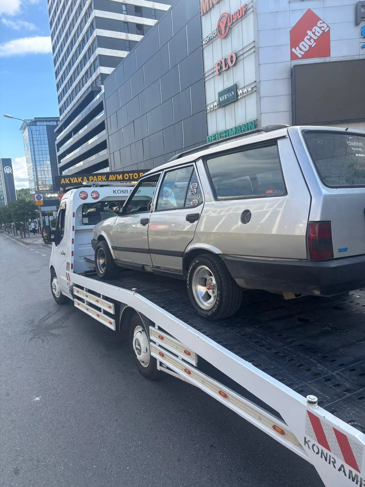
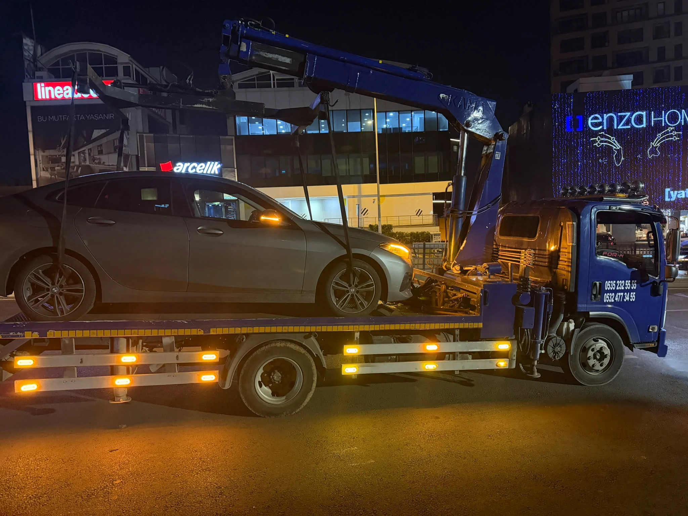
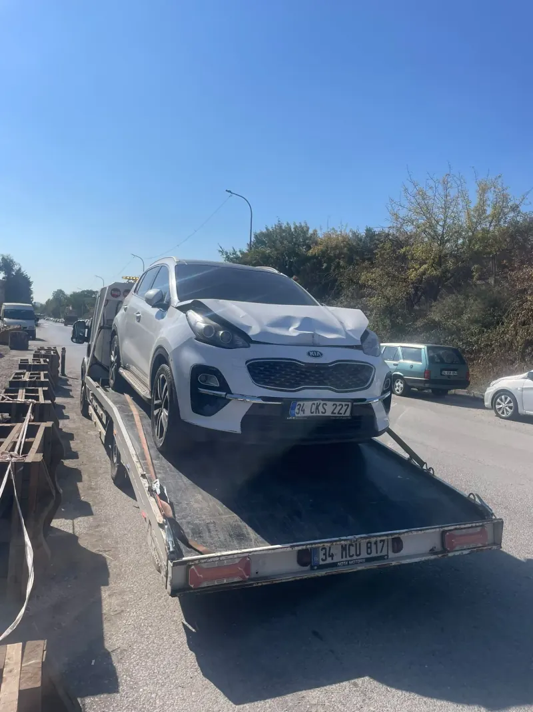
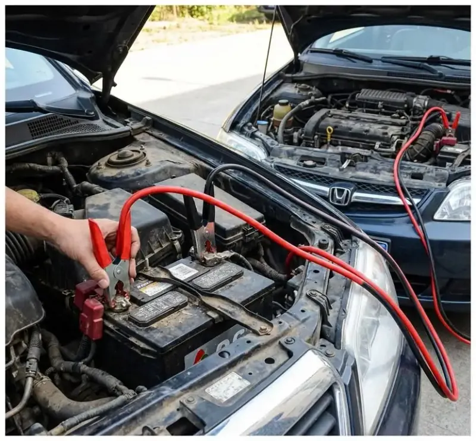
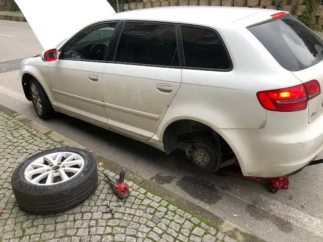
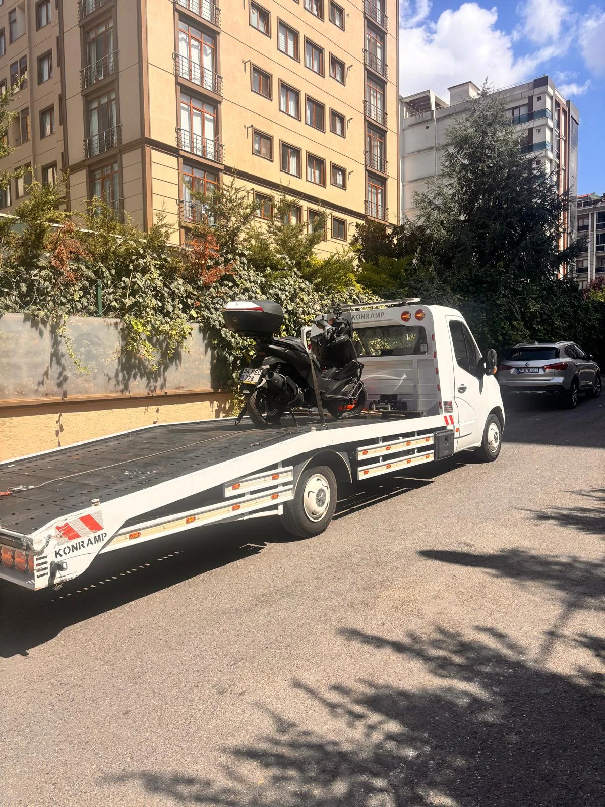
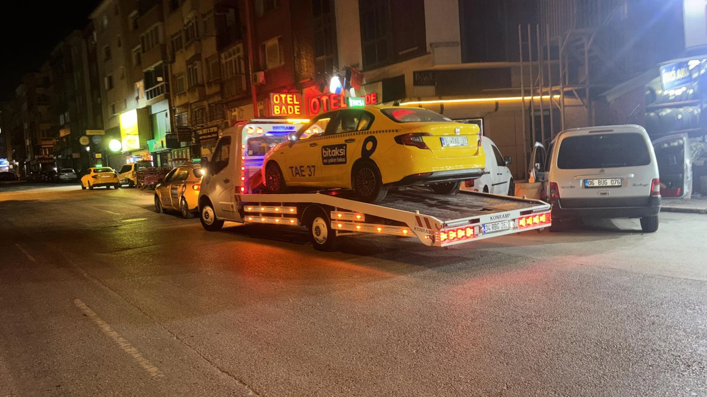

⚡ 15 Dk VarışAcil Oto Çekici
Arıza yapan veya yürümeyen binek ve SUV araçlarınız için sıfır temaslı hidrolik kayar kasa araçlarımızla güvenli çekici desteği.
- %100 Kaskolu & Hasarsız Taşıma
- Sabit Fiyat Garantisi

Ümraniye, Dudullu, Çekmeköy, Ataşehir, TEM ve Şile Otoyolu hatlarında donanımlı kayar kasa filomuzla 7/24 en yakın acil oto çekici, oto kurtarma ve yol yardım desteği sunuyoruz. Sabit fiyat garantisi ve %100 taşıma kaskosu.
Bilgileri seçin, nöbetçi ekibimiz WhatsApp'tan hemen fiyat ve varış süresini iletsin.
Ümraniye genelinde binek, ticari, motosiklet ve ağır vasıtalara özel donanımlı araçlarımızla 7/24 hizmetinizdeyiz.

⚡ 15 Dk VarışArıza yapan veya yürümeyen binek ve SUV araçlarınız için sıfır temaslı hidrolik kayar kasa araçlarımızla güvenli çekici desteği.

🚨 7/24 VinçliTrafik kazası, tekerlek kilitlenmesi, şarampol ve saplanma durumlarında vinçli ve ahtapot aparatlı kurtarıcı filosu.

🔋 12V / 24V BoosterMarş basmayan aracınıza profesyonel mobil booster cihazlarımızla aracın ECU beynine zarar vermeden yerinde çalıştırma.

🛠️ Mobil StepneYolda lastiğiniz patladığında mobil yol yardım aracımızla yerinde stepne değişimi, bijon desteği ve hava basımı desteği.

🏍️ Özel SabitlemeScooter, racing, touring ve chopper modeller için ön tekerlek beşiği ve özel gergi kayışlarıyla devrilme riski olmadan taşıma.

🚐 Güçlü TamburMinibüs, panelvan, transit, kamyonet ve karavanlar için uzun şaseli hidrolik kayar kasalı özel kurtarıcı araç filosu.
Ümraniye'nin tüm mahallelerinde ve çevre otoyollarda sabit bekleyen ekiplerimizle en geç 15 dakikada yanınızdayız.
Alemdağ Caddesi, Santral, Yamanevler, İnkılap
Aşağı Dudullu, Yukarı Dudullu, Tavukçuyolu
Meydan AVM, Buyaka, IKEA Çevresi, TEM Bağlantısı
Finanskent, Elmalıkent, Turgut Özal Bulvarı
Armağanevler, Mithatpaşa Caddesi, Çamlık
Çakmak Köprüsü, Saray Mahallesi, Balkan Cd.
Cemil Meriç, FSM Mahallesi, İstiklal
Dumlupınar, Hekimbaşı, Küçüksu Caddesi
Esenkent, KADOSAN Sanayi Sitesi, Baraj Yolu
İMES Sanayi, MODOKO Mobilyacılar, DES Sanayi
İstanbul Finans Merkezi, Barbaros, Batı Ataşehir
Küçükbakkalköy, Hal Yolu, Carrefour Kavşağı
Samandıra Gişeler, Eyüp Sultan, Şehir Hastanesi
Çamlıca Tünelleri, Bulgurlu, Libadiye, Ünalan
15 Temmuz Köprüsü Katılımı, Acıbadem, Koşuyolu
FSM Köprüsü Ayağı, Rüzgarlıbahçe, Çavuşbaşı
Göztepe Köprüsü, Kozyatağı E-5, Bostancı
Ümraniye Gişeleri, Çamlıca Gişeler, FSM Hattı
Ümraniye - Çekmeköy - Taşdelen - Şile Aksı
Reşadiye Gişeleri, Paşaköy Ayrımı, Hüseyinli
Göztepe Köprüsü, Kozyatağı Kavşağı, Bostancı
Yolda kaldığınızda 4 kolay adımda kaskolu, hasarsız ve sabit fiyatlı oto kurtarma hizmeti:
0544 138 07 34'ü arayın ya da WhatsApp butonumuza basarak canlı GPS konumunuzu iletin.
Aracınızın durumu ve mesafeye göre telefon görüşmesinde net sabit ücreti ve çekicinin dakikasını teyit ederiz.
10-15 dakikada gelen nöbetçi kayar kasa çekicimiz, tampon sürtmesi olmadan aracınızı güvenle kasaya sabitler.
Aracınız taşıma kaskosu altında istediğiniz servise, tamirhaneye veya kapınıza hasarsız ulaştırılır.
Bizi diğer çekici komisyoncularından ve rastgele araçlardan ayıran 6 temel güvencemiz:
Ümraniye merkez, Dudullu, TEM ve Şile otoyolu hatlarında hazır bekleyen mobil nöbetçi kurtarıcı filosu.
Aracınız kayar kasaya yüklendiği andan teslim edilene kadar tam kapsamlı Emtia Taşıma Kaskosu güvencesindedir.
Telefonda anlaştığımız fiyat geçerlidir. Olay yerine varıldığında ek ücret, gece zammı veya yol uzatma bahanesi yoktur.
Alçak tamponlu spor otomobiller, lüks SUV'lar ve otomatik araçlar için tampon sürtmeyen hidrolik açılı platform.
Gece yarısı da bayram günleri de doğrudan direksiyon başındaki operatörümüz yanıt verir; çağrı merkezinde bekletilmezsiniz.
Ümraniye sanayilerini, İMES, Dudullu OSB ara sokaklarını ve otoyol viyadüklerini çok iyi biliyor, navigasyonla vakit kaybetmiyoruz.
Google Haritalar üzerinden 5.0 yıldız tam puan almış gerçek müşteri geri bildirimleri.
"Gece yarısı Şile yolunda aracımın şanzımanı kilitlendi. Aradıktan 12 dakika sonra çekici yanımdaydı. Kayar kasaya aracı milim çizmeden yüklediler. Fiyat konusunda da başta ne söyledilerse onu aldılar."
"IKEA otoparkında aküm bitti, marş hiç basmıyordu. WhatsApp'tan konum attım, arkadaş hemen geldi ve akü takviyesiyle aracı çalıştırdı. Çok kibar ve profesyonel bir esnaf, teşekkür ederim."
"TEM bağlantısında kaza yaptık, sol ön teker aks kırmıştı ve kilitliydi. Vinçli araçlarıyla arabaya zarar vermeden yüklediler ve Bostancı sanayiye götürdüler. 7/24 gözünüz kapalı güvenebilirsiniz."
2026 yılı güncel standartlarımız: Mesafe, araç tipi ve arıza durumuna göre şeffaf, sürprizsiz ve kaskolu sabit fiyat güvencesi.
| Hizmet / Araç Türü | Kapsam & Güzergah | Ortalama Varış | Fiyatlandırma Standardı |
|---|---|---|---|
|
🚗 Şehir İçi Kayar Kasa
|
Ümraniye Merkez, Dudullu, Tepeüstü, Çakmak (0 - 10 km) | 10 - 15 Dakika | Sabit Taban Fiyat |
|
📍 Komşu İlçe & Servis Transferi
|
Ataşehir, Çekmeköy, Sancaktepe, Üsküdar (10 - 25 km) | 15 - 20 Dakika | Net Km Başı Tarife |
|
🛣️ Otoyol & Çevre Yolu Kurtarma
|
TEM Otoyolu, Şile Otoyolu, D-100 E-5 & Kuzey Marmara | 10 - 15 Dakika | Nöbetçi Sabit Fiyat |
|
🏗️ Ahtapot / Vinç Kurtarma
|
Kaza, şarampol, teker kilitli, otopark veya yürümeyen araçlar | 15 - 20 Dakika | Ön Onaylı Paket Fiyat |
|
⚡ Yerinde Akü & Mobil Lastik
|
12V/24V takviye cihazı ile çalıştırma veya yerinde stepne değişimi | 10 - 15 Dakika | Sabit Servis Ücreti |
Yolda kaldığınızda doğru, güvenilir ve en yakın çekici desteğine ulaşmanız için hazırladığımız kapsamlı operasyon rehberi.
İstanbul Anadolu Yakası'nın en kalabalık ilçelerinden biri olan Ümraniye'de mekanik arıza, akü tükenmesi veya kaza anında zamanla yarış başlar. Ümraniye Yol Yardım olarak, Ümraniye Merkez, Dudullu, Çakmak, Tepeüstü, Atakent ve Ihlamurkuyu gibi kilit arterlerde 7/24 hazır bekleyen nöbetçi kurtarıcı filomuzla hizmet veriyoruz.
Çağrınızı aldığımız andan itibaren GPS navigasyon desteğiyle trafiğe takılmadan ortalama 10 ila 15 dakika içerisinde aracınızın yanına ulaşıyor; Ümraniye çekici ve acil oto kurtarıcı ihtiyaçlarınızda sabit fiyat sözüyle en ekonomik çözümü sunuyoruz.
Sürücülerin sıklıkla karıştırdığı iki terim aslında farklı operasyonları ifade eder:
Filomuzda hem düşük açılı kayar platformlu çekiciler hem de profesyonel vinçli oto kurtarıcı donanımları bulunmaktadır.
İnternette en yakın çekici araması yaparken sahte aracılar veya sonradan iki katı fiyat isteyen fırsatçılarla karşılaşmamak için şu noktalara dikkat edin:
Günün veya gecenin hangi saati olursa olsun; Alemdağ Caddesi, Tepeüstü Kavşağı, Dudullu OSB, TEM Çamlık Gişeleri veya Şile Yolu'nda yolda kaldığınızda bir telefon kadar yakınız. En yakın acil çekici ve oto kurtarıcı ekibimiz derhal yola çıkar.
Çekici çağırma süreci ve fiyatlandırma hakkında aklınıza takılan soruların yanıtları.
Ümraniye, Dudullu, Tepeüstü ve TEM otoyolu gibi stratejik noktalarda nöbetçi araçlarımız hazır beklemektedir. Trafik durumuna bağlı olarak ortalama varış süremiz 10 ile 15 dakika arasındadır.
Fiyatlarımız aracın türü, arıza durumu (teker kilitli mi, yürür durumda mı) ve taşınacak mesafe (km) baz alınarak net olarak hesaplanır. Telefonda veya WhatsApp'ta onayladığınız fiyat kesindir; teslimatta asla sürpriz veya gizli ücret talep edilmez.
Evet, tüm araç taşıma ve kurtarma işlemlerimiz "Emtia Nakliyat & Taşıma Kaskosu" güvencesi altındadır. Aracınız çekici üzerine yüklendiği andan teslim edilene kadar her türlü riske karşı tam sigortalıdır.
Nakit ödemenin yanı sıra tüm bankaların kredi kartları, banka kartları ve anında banka havalesi / EFT / FAST ile güvenle ödeme yapabilirsiniz.